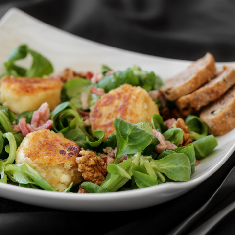
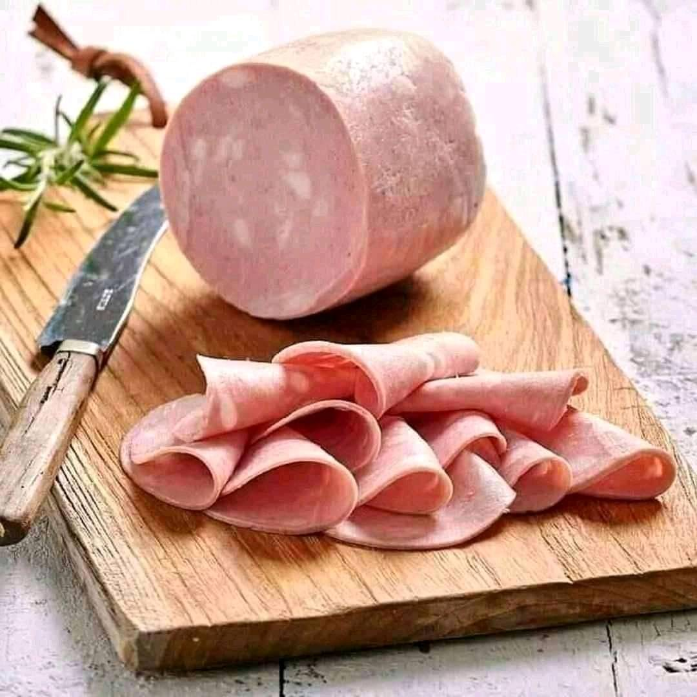

En tant que service Traiteur, on vous propose d'une activité incontournable qui aura lieu dans toutes les services Billy's Traiteur:
En tant que service Traiteur, on vous propose d'une activité incontournable qui aura lieu dans toutes les services Billy's Traiteur:
Si vous rêver de devenir un meilleur traiteur
Billy's traiteur nous a former pour faire des services traiteur , leurs formation sont trés éfficace,et proféssionnel.
Encore mercie pour la couverture de notre mariage. Nous sommes plus que satisfaits de la présentation. Nous revivons tous les moments forts de notre mariage à travers les photos et vidéos, vous êtes les meilleur